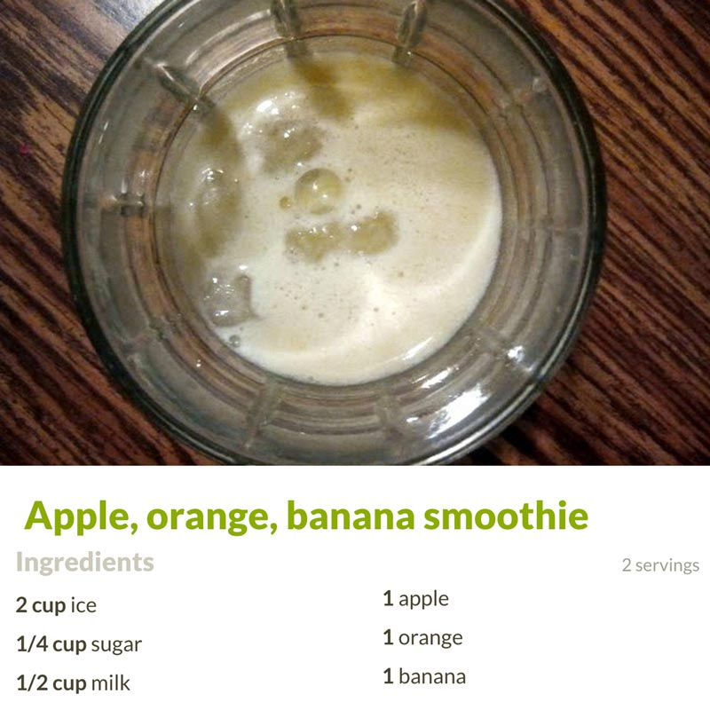
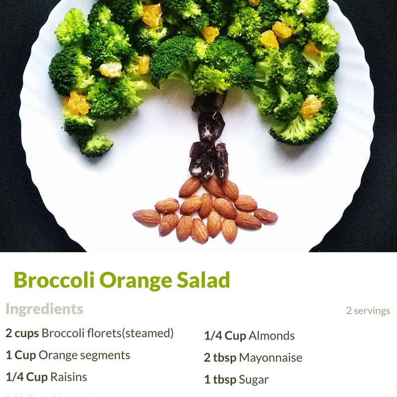
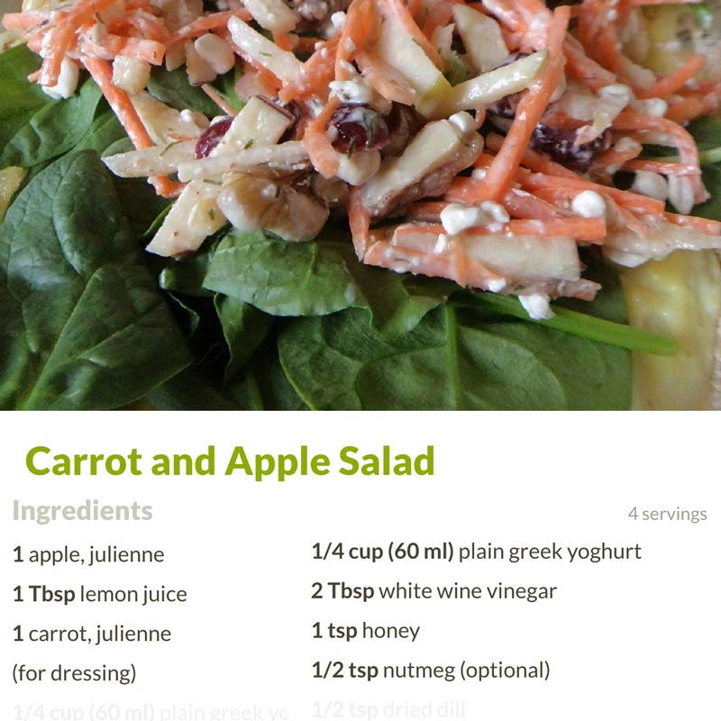

Loading Skynet (This may take a minute, 40mb)...
Sorry! An error occured while loading the model 😢
If you're on an iPhone, please try using Safari.
Real time ingredient detection to recipes
Detects banana, apple, orange, broccoli & carrot
These combinations will output a recipe: broccoli & orange ----- carrot & apple ---- apple & orange
  